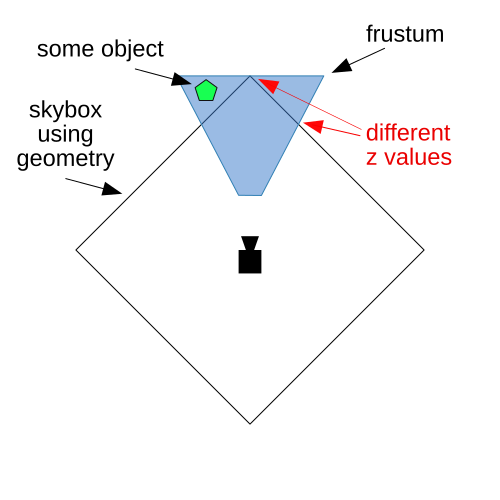

Este artículo continúa desde el artículo sobre environment maps.
Un skybox es una caja con texturas que parecen el cielo en todas las direcciones o, más bien, que parecen lo que está muy lejos, incluyendo el horizonte. Imagina que estás en una habitación y en cada pared hay un póster a tamaño real de alguna vista, añade un póster para cubrir el techo mostrando el cielo y uno para el suelo mostrando el terreno; eso es un skybox.
Muchos juegos 3D hacen esto simplemente creando un cubo, haciéndolo muy grande y poniéndole una textura del cielo.
Esto funciona pero tiene problemas. Un problema es que tienes un cubo que necesitas ver en múltiples direcciones, sea cual sea la dirección a la que apunte la cámara. Quieres que todo se dibuje lejos, pero no quieres que las esquinas del cubo se salgan del plano de recorte (clipping plane). Complicando ese asunto, por razones de rendimiento quieres dibujar las cosas cercanas antes que las lejanas porque la GPU, usando una textura de profundidad (depth texture), puede omitir el dibujo de píxeles que sabe que fallarán la prueba. Así que, idealmente, deberías dibujar el skybox al final con la prueba de profundidad (depth test) activada, pero si realmente usas una caja, a medida que la cámara mira en diferentes direcciones, las esquinas de la caja estarán más lejos que los lados, lo que causa problemas.

Puedes ver arriba que necesitamos asegurarnos de que el punto más lejano del cubo esté dentro del frustum, pero debido a eso, algunos bordes del cubo podrían terminar cubriendo objetos que no queremos que se cubran.
La solución típica es desactivar la prueba de profundidad y dibujar el skybox primero, pero entonces no obtenemos el beneficio de rendimiento de que la prueba de profundidad no dibuje píxeles que luego cubriremos con cosas en nuestra escena.
En lugar de usar un cubo, simplemente dibujemos un triángulo que cubra todo el canvas y usemos un cubemap. Normalmente usamos una matriz de vista-proyección (view projection matrix) para proyectar geometría en el espacio 3D. En este caso haremos lo contrario. Usaremos la inversa de la matriz de vista-proyección para trabajar hacia atrás y obtener la dirección en la que la cámara está mirando para cada píxel que se está dibujando. Esto nos dará direcciones para buscar en el cubemap.
Comenzando con el ejemplo de environment map, ya que ya carga un cubemap y genera mips para él. Usemos un triángulo con valores fijos. Aquí está el shader:
struct Uniforms {
viewDirectionProjectionInverse: mat4x4f,
};
struct VSOutput {
@builtin(position) position: vec4f,
@location(0) pos: vec4f,
};
@group(0) @binding(0) var<uniform> uni: Uniforms;
@group(0) @binding(1) var ourSampler: sampler;
@group(0) @binding(2) var ourTexture: texture_cube<f32>;
@vertex fn vs(@builtin(vertex_index) vNdx: u32) -> VSOutput {
let pos = array(
vec2f(-1, 3),
vec2f(-1,-1),
vec2f( 3,-1),
);
var vsOut: VSOutput;
vsOut.position = vec4f(pos[vNdx], 1, 1);
vsOut.pos = vsOut.position;
return vsOut;
}
Puedes ver arriba que, primero, establecemos @builtin(position) a través de vsOut.position a nuestra posición de vértice y establecemos explícitamente z en 1 para que el triángulo se dibuje en el valor z más lejano. También pasamos la posición del vértice al fragment shader (shader de fragmentos).
En el fragment shader multiplicamos la posición por la inversa de la matriz de vista-proyección y dividimos por w para pasar del espacio 4D al espacio 3D. Esta es la misma división que ocurre a @builtin(position) en el vertex shader (shader de vértices), pero aquí la estamos haciendo nosotros mismos.
@fragment fn fs(vsOut: VSOutput) -> @location(0) vec4f {
let t = uni.viewDirectionProjectionInverse * vsOut.pos;
return textureSample(ourTexture, ourSampler, normalize(t.xyz / t.w) * vec3f(1, 1, -1));
}
Nota: Multiplicamos la dirección z por -1 por las razones que cubrimos en el artículo anterior.
El pipeline no tiene buffers en la etapa de vértice:
const pipeline = device.createRenderPipeline({
label: 'no attributes',
layout: 'auto',
vertex: {
module,
},
fragment: {
module,
targets: [{ format: presentationFormat }],
},
depthStencil: {
depthWriteEnabled: true,
depthCompare: 'less-equal',
format: 'depth24plus',
},
});
Observa que establecemos depthCompare a less-equal en lugar de less porque limpiamos la textura de profundidad a 1.0 y estamos renderizando a 1.0. 1.0 no es menor que 1.0, por lo que no renderizaríamos nada si no cambiáramos esto a less-equal.
Nuevamente, necesitamos configurar un uniform buffer:
// viewDirectionProjectionInverse
const uniformBufferSize = (16) * 4;
const uniformBuffer = device.createBuffer({
label: 'uniforms',
size: uniformBufferSize,
usage: GPUBufferUsage.UNIFORM | GPUBufferUsage.COPY_DST,
});
const uniformValues = new Float32Array(uniformBufferSize / 4);
// offsets a los diversos valores uniform en índices float32
const kViewDirectionProjectionInverseOffset = 0;
const viewDirectionProjectionInverseValue = uniformValues.subarray(
kViewDirectionProjectionInverseOffset,
kViewDirectionProjectionInverseOffset + 16);
y configurarlo en el momento del renderizado:
const aspect = canvas.clientWidth / canvas.clientHeight;
const projection = mat4.perspective(
60 * Math.PI / 180,
aspect,
0.1, // zNear
10, // zFar
);
// Cámara girando en círculo desde el origen mirando al origen
const cameraPosition = [Math.cos(time * .1), 0, Math.sin(time * .1)];
const view = mat4.lookAt(
cameraPosition,
[0, 0, 0], // target
[0, 1, 0], // up
);
// Solo nos importa la dirección, así que eliminamos la traslación
view[12] = 0;
view[13] = 0;
view[14] = 0;
const viewProjection = mat4.multiply(projection, view);
mat4.inverse(viewProjection, viewDirectionProjectionInverseValue);
// subimos los valores uniform al uniform buffer
device.queue.writeBuffer(uniformBuffer, 0, uniformValues);
Observa arriba que estamos haciendo girar la cámara alrededor del origen donde calculamos cameraPosition. Luego, después de crear una matriz view, ponemos a cero la traslación ya que solo nos importa hacia dónde mira la cámara, no dónde está.
A partir de eso multiplicamos con la matriz de proyección, tomamos la inversa y luego establecemos la matriz.
Combinemos el cubo con mapa de entorno de nuevo en este ejemplo. Primero, renombremos un montón de variables.
Del ejemplo de skybox:
module -> skyBoxModule pipeline -> skyBoxPipeline uniformBuffer -> skyBoxUniformBuffer uniformValues -> skyBoxUniformValues bindGroup -> skyBoxBindGroup
De manera similar, del ejemplo de mapa de entorno:
module -> envMapModule pipeline -> envMapPipeline uniformBuffer -> envMapUniformBuffer uniformValues -> envMapUniformValues bindGroup -> envMapBindGroup
Con esos nombres actualizados, solo tenemos que actualizar nuestro código de renderizado. Primero actualizamos los valores uniform para ambos:
const aspect = canvas.clientWidth / canvas.clientHeight;
mat4.perspective(
60 * Math.PI / 180,
aspect,
0.1, // zNear
10, // zFar
projectionValue,
);
// Cámara girando en círculo desde el origen mirando al origen
cameraPositionValue.set([Math.cos(time * .1) * 5, 0, Math.sin(time * .1) * 5]);
const view = mat4.lookAt(
cameraPositionValue,
[0, 0, 0], // target
[0, 1, 0], // up
);
// Copiamos la vista en viewValue ya que vamos
// a poner a cero la traslación de la vista
viewValue.set(view);
// Solo nos importa la dirección, así que eliminamos la traslación
view[12] = 0;
view[13] = 0;
view[14] = 0;
const viewProjection = mat4.multiply(projectionValue, view);
mat4.inverse(viewProjection, viewDirectionProjectionInverseValue);
// Rotar el cubo
mat4.identity(worldValue);
mat4.rotateX(worldValue, time * -0.1, worldValue);
mat4.rotateY(worldValue, time * -0.2, worldValue);
// subimos los valores uniform a los uniform buffers
device.queue.writeBuffer(envMapUniformBuffer, 0, envMapUniformValues);
device.queue.writeBuffer(skyBoxUniformBuffer, 0, skyBoxUniformValues);
Luego renderizamos ambos. El cubo con mapa de entorno primero y el skybox segundo para mostrar que dibujarlo segundo funciona.
// Dibujar el cubo
pass.setPipeline(envMapPipeline);
pass.setVertexBuffer(0, vertexBuffer);
pass.setIndexBuffer(indexBuffer, 'uint16');
pass.setBindGroup(0, envMapBindGroup);
pass.drawIndexed(numVertices);
// Dibujar el skyBox
pass.setPipeline(skyBoxPipeline);
pass.setBindGroup(0, skyBoxBindGroup);
pass.draw(3);
Espero que estos últimos 2 artículos te hayan dado una idea de cómo usar un cubemap. Es común, por ejemplo, tomar el código de calcular la iluminación y combinar ese resultado con los resultados de un mapa de entorno para crear materiales como el capó de un coche o un suelo pulido.